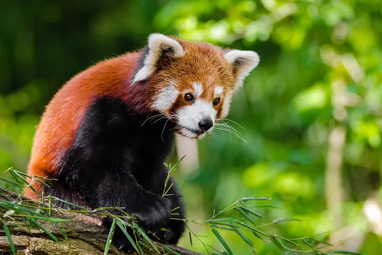

What do red pandas eat?
Red pandas eat bamboo, and very little else. About 95 percent of their diet is bamboo, but unlike giant pandas they are fussy eaters, picking only the most nutritious leaf tips and tender shoots. Now and then they add fruit, roots, insects, eggs or even a small bird, a reminder that this leaf eater belongs to the order Carnivora.

A bamboo specialist that picks the best bits
Smithsonian's National Zoo puts bamboo at about 95 percent of the red panda's diet. The way a red panda eats it is quite different from a giant panda, though. A giant panda will chew through nearly every part of the plant above ground, woody stems included. A red panda feeds selectively on the leaf tips and, when they are available, the young shoots. It grips a stem with its forepaws, helped by a wrist bone that works as a false thumb, and shears off the leaves it wants with its mouth.
Field work backs this up. In the Wolong Reserve in China, David Reid, Hu Jinchu and Huang Yan followed wild red pandas and examined their droppings. Bamboo turned up in 93.7 percent of 791 droppings, published in the Journal of Zoology in 1991. Everything else on the menu is a side dish.
Why red pandas need so much of it
Bamboo is a poor food for an animal with a meat eater's gut. Smithsonian notes that red pandas have a simple carnivore stomach, despite their leafy diet. To measure what that means in practice, Wei Fuwen and colleagues fed wild caught red pandas only their natural bamboo, Bashania spanostachya, at a field station in the Yele Natural Reserve in Sichuan. Their trials ran every month from May to November 1995 and were published in the Journal of Zoology in 1999.
The results were striking:
- Poor digestion. Red pandas digested bamboo poorly, especially the tough cell walls, which suggests gut microbes play only a minor role, much as in the giant panda.
- Fast transit. Bamboo passed through the gut in just 2 to 4 hours.
- Shoots beat leaves. Shoots were easier to digest than leaves, and digestion was best in summer and autumn, middling in spring and worst in winter.
- Big meals. The team estimated red pandas eat over 1.5 kg of fresh leaves a day, or 4 kg of fresh shoots a day.
The strategy, in short, is to choose the best parts, eat a lot and push it through quickly. That leaves little spare energy, which is why red pandas rest so much and become dormant in hard cold, as we explain in how do red pandas stay warm.
The rest of the menu
When bamboo isn't enough, red pandas branch out. Smithsonian lists roots, succulent grasses, fruits, insects and grubs, and notes that red pandas are known to occasionally kill and eat birds and small mammals. Our red panda facts page also covers acorns and eggs. These extras are a small share of the year's food, but they can matter in seasons when good leaves are scarce.
In zoos the menu is simpler. At Smithsonian's National Zoo, red pandas get bamboo, bamboo shoots when in season and leafeater biscuits, plus treats such as apples, grapes, bananas and blueberries as enrichment.
Same diet, separate evolution
Red and giant pandas both live on bamboo, yet they are only distant relatives, as we explain in are red pandas related to giant pandas? A 2017 study in PNAS led by Hu Yibo compared the genomes of both species to see how two meat eating lineages ended up on the same plant diet. The team found signs of convergent evolution in genes possibly linked to the false thumb and to using key bamboo nutrients. They also found that the umami taste receptor gene TAS1R1, which helps many mammals sense the savoury taste of meat, has stopped working in both pandas.
For a side by side look at how the two species eat, see our panda diet guide and how much bamboo a giant panda eats.
Key takeaways
- Bamboo makes up about 95 percent of a red panda's diet, mainly leaf tips and tender shoots (Smithsonian).
- Bamboo was found in 93.7 percent of 791 wild red panda droppings in Wolong (Reid, Hu and Huang 1991).
- Red pandas digest bamboo poorly and pass it in 2 to 4 hours, so they eat over 1.5 kg of leaves or 4 kg of shoots a day (Wei and colleagues 1999).
- Both pandas show convergent genetic changes for a bamboo diet and have lost a working umami taste gene (Hu and colleagues 2017).
Frequently asked questions
What do red pandas eat?
Mostly bamboo. Smithsonian's National Zoo says bamboo makes up about 95 percent of a red panda's diet, mainly the most nutritious leaf tips and tender shoots. They may also eat roots, succulent grasses, fruits, insects and grubs, and occasionally birds and small mammals.
How much bamboo does a red panda eat a day?
A lot for a small animal. In a field study in Sichuan, Wei and colleagues (1999) estimated that wild red pandas eat over 1.5 kg of fresh bamboo leaves a day, or about 4 kg of fresh shoots a day when shoots are in season.
Do red pandas eat meat?
Only now and then. Red pandas belong to the order Carnivora, but Smithsonian's National Zoo notes they only occasionally kill and eat birds and small mammals. In a study in Wolong, China, 93.7 percent of 791 red panda droppings contained bamboo (Reid, Hu and Huang 1991).
Can red pandas digest bamboo well?
No. Wei and colleagues (1999) found red pandas digest bamboo poorly, especially the tough cell walls, and that food passes through the gut in only 2 to 4 hours. They survive by choosing the best leaves and shoots and eating large amounts.
What do red pandas eat in zoos?
At Smithsonian's National Zoo, red pandas eat bamboo, bamboo shoots when in season and leafeater biscuits, with treats such as apples, grapes, bananas and blueberries as enrichment.
Sources
- Smithsonian's National Zoo and Conservation Biology Institute: Red panda
- Wei, F., Feng, Z., Wang, Z., Zhou, A. and Hu, J. (1999), Use of the nutrients in bamboo by the red panda (Ailurus fulgens), Journal of Zoology 248: 535 to 541. DOI 10.1111/j.1469-7998.1999.tb01053.x
- Reid, D. G., Hu, J. and Huang, Y. (1991), Ecology of the red panda Ailurus fulgens in the Wolong Reserve, China, Journal of Zoology 225(3): 347 to 364. DOI 10.1111/j.1469-7998.1991.tb03821.x
- Hu, Y., Wu, Q., Ma, S. et al. (2017), Comparative genomics reveals convergent evolution between the bamboo eating giant and red pandas, Proceedings of the National Academy of Sciences 114: 1081 to 1086. DOI 10.1073/pnas.1613870114
Cite this page
APA
PandasWise. (2026, October 25). What do red pandas eat? https://pandaswise.com/blog/what-do-red-pandas-eat.html
MLA
"What do red pandas eat?" PandasWise, 25 Oct. 2026, https://pandaswise.com/blog/what-do-red-pandas-eat.html.
Chicago
PandasWise. "What do red pandas eat?" PandasWise. October 25, 2026. https://pandaswise.com/blog/what-do-red-pandas-eat.html.